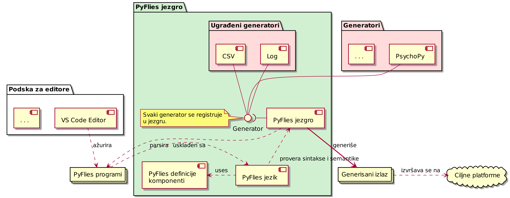

Смернице за писање дипломских и мастер радова
Припрема текста
- Користите прописани шаблон са насловном страном. Текст се пише искључиво на ћирилици. За пресловљавање у Либре Офису можете користити OOoTranslit.
- Страницу са задатком као и странице са кључном документацијском информацијом ћете добити од ментора приликом финализације текста.
- За припрему рада можете користити Либре Офис (препоручено), Мајкрософт Ворд или Латек(енг. LaTeX). Обавезно инсталирајте подршку са српски језик са провером правописа.
- Обавезно прочитајте рад у целини бар једном пре слања ментору на читање.
- Ментору шаљете рад у пдф формату.
- За мастер рад потребно је написати и рад за Зборник радова ФТН-а. Обим је 4 странице двостубачно. Погледајте пример. Шаблон преузимате са сајта Зборника.
Обавезни делови
Сваки рад садржи:
- Прописану насловну страну
- Задатак (добијате од ментора)
- Садржај
- Поглавља са главним текстом
- Литературу
- Биографију кандидата
- Кључну документацијску информацију (добијате од ментора)
Дефинисање појмова и преводи
При првом увођењу одређеног појма, описати га и евентуално навести назив на енглеском.
Пример:
Насупрот језицима опште намене, језици специфични за домен (ЈСД, енг. Domain-Specific Languages) представљају рачунарске језике који нуде повећање експресивности кроз употребу концепата и нотација прилагођених и често ограничених на одређени домен проблема.
- Користити уобичајени превод уколико постоји или назив у оригиналу у курзиву (енг. italics).
Стил писања
- Дефинисати стил и доследно га се придржавати (фонт, величине наслова, називи слика и табела и сл.).
- Знаци интерпункције:
- Тачке, зарези, двотачке – пишу се уз претходну реч. Следећа реч почиње после размака.
- Цртица: пише се са размаком са обе стране.
- Заграде: пише се уз прву односно последњу реч у загради. Отворена заграда почиње после размака у односу на претходну реч. После затворене заграде такође иде размак.
- Код техничких текстова се обично избегава прво лице једнине и користе пасивни облици где год је то могуће. Нпр. уместо “Jа сам имплементирао” је боље рећи “У раду је приказана имплементација…”.
- Избегавати квалификације:
- "Веома је тешко направити…"
- “Информациони систем је страховито сложен…”
- "Имплементација је јако компликована…"
Граматика
- "Бисмо, бисте" – пише се спојено.
"Не" – пише се одвојено ако стоји уз глагол, али спојено са остатком речи ако је у оквиру придева или прилога.
Пример:
- Придеви и прилози:
- "недовољно, невидљиво, неразговетно, неизграђен…".
- Глаголи:
- "не видим, не могу…".
- Придеви и прилози:
- На почетку набрајања ставити двотачку.
- Не користити енглеску конвенцију за писање наслова. У српском језику само прва реч у наслову почиње великим словом.
Слике и табеле
- Слике и табеле морају имати наслов (број и назив) који стоји на истој страни на којој и слика односно табела (тј. не сме дођи до преламања наслова на следећу страну).
- Давати бројеве у оквиру поглавља, нпр. слике у другом поглављу имају бројеве 2.1, 2.2 итд.
- Свака слика и табела се морају барем једном споменути у тексту.
Табеле и слике (и њихове наслове) центрирати по хоризонтали.
Пример:
На слици 11.1 приказана је PyFlies архитектура која прати стандардне компајлерске архитектуре.

Figure 1: Слика 11.1: PyFlies архитектура.
Цитирање
- Цитирајте све коришћене изворе на месту употребе.
- Не преузимајте садржаје дословно (copy-paste) већ својим речима препричајте прочитано и пробајте да укрстите са више литературних извора.
- Цитате наводите и у наслову слике које сте преузели. При преузимању слике потребно је да лиценца омогућава употребу у другим радовима.
- Све што не цитирате, а преузели сте из других извора, сматра се плагијатом.
Цитирање се обавља навођењем броја литературног навода у угластим заградама. Цитат је део реченице и стога се наводи пре тачке.
Примери:
Данас су најпознатије проширена Бакус-Наурова форма (енг. Extended Backus–Naur form - EBNF)[13] и аугментована Бакус-Наурова форма.
…
…дефиниција дата је у RFC 5234 документу[14].
- Литературни наводи цитирани у тексту треба да буду наведени у секцији "Литература" на крају текста.
- Сви литературни наводи морају имати аутора, наслов, издавача и годину.
Сви онлајн извори обавезно морају да имају наслов, линк до извора и датум приступа. За онлајн изворе није потребно наводити аутора, издавача и годину уколико нису познати.
Примери:
…
[69] A. Aho, J. Ullman, The theory of parsing, translation, and compiling, Vol. 1 of Series in Automatic Computation, Prentice-Hall, 1972.
…
[72] EBNF: A notation to describe syntax, Online, https://www.ics.uci.edu/~pattis/misc/ebnf2.pdf, 2013, pristup: 2021-08-01.
Радове и књиге можете потражити на Гугл претраживачу за радове: https://scholar.google.com/
Испод сваке референце имате број цитата (већи број обично значи релевантнији рад), радове који га цитирају (помаже за даљу претрагу) и начин цитирања.
Предаја рада
- За библиотеку је потребан један тврдо коричени примерак.
- ЦД сa пдф верзијом рада је потребно да се убаци у омотницу залепљену на задњим корицама са унутрашње стране. Име аутора мора бити написано на ЦД-у. У последње време могуће је донети ПДФ на УСБ диску.
- Примерци за комисију - у договору са ментором.
- После одбране, ментор потписује рад за библиотеку. Потребан је и потпис шефа студијског програма. Потписан рад кандидат односи у библиотеку ФТН-а.
Очекивани обим рада
- Дипломски: 40+ страна Б5 или 30+ страна А4. Фонт 12.
- Мастер: 60+ Б5 или 50+ А4. Фонт 12.